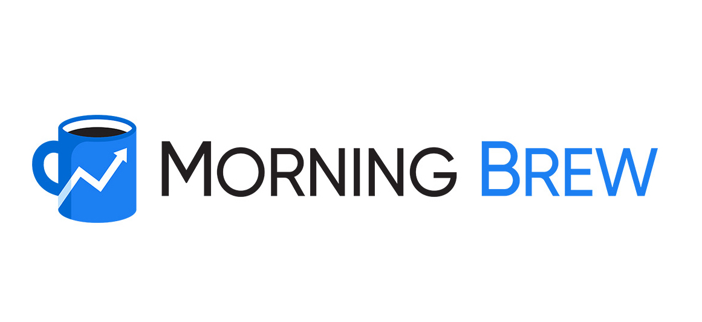
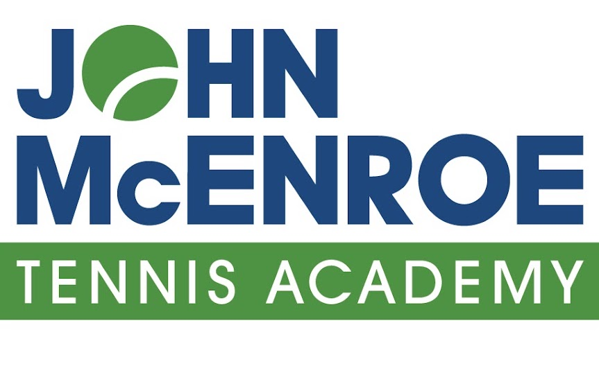

Experience
Work Experiences
Green Mustache
Marketing and Social Media Intern
Presented marketing initiatives to CEO to help increase social media engagement. Redesigned the organization of graphic assets and analyzed consumer demographics for ad creation.
The Morning Brew
Campus Ambassador
Created marketing strategies to increase engagement and subscriptions for the daily newsletter focused on current events and business topics. Took initiative to help organize group and assign roles amongst peers.
John McEnroe Tennis Academy at Sportime Lake Isle
Head Counselor
Counselor/Staff
Managed summer staff, helped build work schedules, and coordinated daily tennis program. Coached and ran drills for kids ages 4-14. During the summer program, oversaw other activities.
Extracurriculars

Lean In at the University of Michigan
Director of Marketing
Marketing Core Team
Lead and manage team to create graphic content promoting events and relevant social issues throughout the year. Affiliated with the Ross School of Business, Lean In focuses on empowering women through creating open dialogues about issues women face.

American Cancer Society
Fundraise for events for the American Cancer Society as a member of a Relay for Life team.

Chi Omega Fraternity
Member of Chi Omega at the University of Michigan. Participate in community service events in support of Make- A-Wish foundation as well as other local philanthropies.